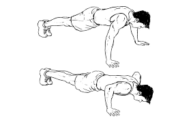
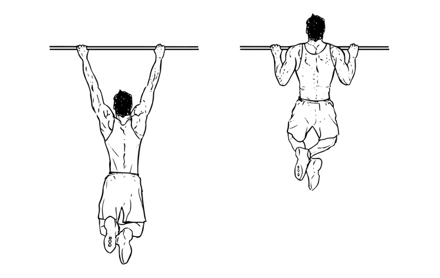
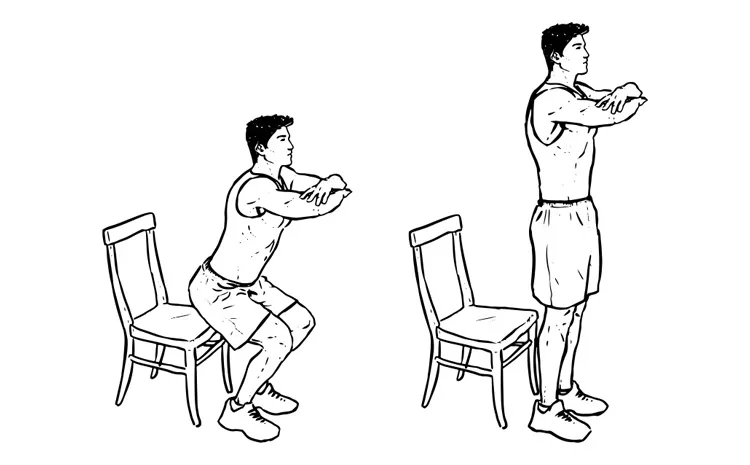

Flotări

Flotările sunt unul dintre cele mai populare și eficiente exerciții din calisthenics, care targetează în principal musculatura pieptului, umerilor și tricepsului. Acestea implică mișcarea de ridicare și coborâre a corpului, utilizând greutatea proprie, sprijinindu-te pe palme și vârfurile degetelor picioarelor.
Pentru a efectua o flotare corectă, începe din poziția de planșă, cu mâinile plasate puțin mai late decât lățimea umerilor și corpul aliniat într-o linie dreaptă de la cap până la călcâie. Apoi, coboară încet pieptul spre sol, menținând coatele ușor îndoite și aproape de corp, iar apoi împinge cu palmele pentru a te ridica înapoi la poziția de start.
Flotările sunt excelente pentru întărirea musculaturii superioare a corpului, dar și pentru îmbunătățirea stabilității nucleului, deoarece implică și mușchii abdominali și lombari. În plus, sunt un exercițiu funcțional care contribuie la dezvoltarea forței și rezistenței, fiind folosite atât în antrenamentele de forță, cât și în cele de rezistență.
Există multe variante ale flotărilor, de la flotări standard, flotări pe un singur braț, până la flotări declinate sau arcing (cu pieptul spre sol), care pot adresa diferite grupuri musculare și pot adăuga dificultate antrenamentului.
Tracțiuni

Tracțiunile sunt un exercițiu fundamental în calisthenics, excelent pentru dezvoltarea forței în partea superioară a corpului, în special în spate, umeri și brațe. Acestea implică ridicarea corpului prin tragerea brațelor, folosind o bară sau un alt dispozitiv similar, până când bărbia trece deasupra barei. Tracțiunile sunt adesea considerate un test de forță și rezistență, având un impact semnificativ asupra mușchilor dorsali, trapezului, bicepsului și antebrațelor.
Pentru a efectua o tracțiune corectă, începe din poziția de suspendare, cu brațele complet întinse și palmele orientate spre înainte sau spre tine (în funcție de varianta aleasă). Împinge-ți umerii în jos și începe să tragi cu brațele, concentrându-te pe activarea mușchilor spatelui, nu doar pe brațe. Continuă mișcarea până când bărbia depășește bara, apoi coboară controlat până când brațele sunt din nou complet întinse.
Există mai multe variante de tracțiuni, care pot crește dificultatea sau pot adresa diferite grupuri musculare: tracțiuni cu prindere largă (pentru a pune accent pe partea superioară a spatelui), tracțiuni cu prindere îngustă (care activează mai mult bicepsul), sau tracțiuni cu prindere supină (palmele orientate spre tine), care sunt mai accesibile pentru începători.
Tracțiunile sunt un exercițiu de forță complex, care necesită atât mobilitate cât și tehnică. Sunt un indicator important al progresului în calisthenics și un excelent mod de a construi o musculatură solidă a spatelui și brațelor.
Genuflexiuni

Genuflexiunile reprezintă unul dintre cele mai eficiente exerciții funcționale care implică întregul corp, fiind esențiale în programele de antrenament pentru forță, rezistență și flexibilitate. Acestea constau într-o mișcare controlată de coborâre și ridicare a corpului, asemănătoare cu poziția de șezut pe un scaun, utilizând în principal mușchii coapselor, fesierilor și ai picioarelor. Genuflexiunile sunt versatile, adaptabile pentru toate nivelurile de fitness, de la începători la sportivi avansați.
Executarea regulată a genuflexiunilor contribuie la dezvoltarea forței musculare, în special în partea inferioară a corpului, dar și la îmbunătățirea echilibrului și coordonării. Pe lângă întărirea musculaturii, genuflexiunile activează și sistemul cardiovascular, fiind un exercițiu excelent pentru arderea caloriilor. De asemenea, ele promovează sănătatea articulațiilor prin creșterea mobilității șoldurilor, genunchilor și gleznelor.
Pentru a realiza genuflexiuni corect, este important să menții spatele drept, pieptul ridicat și privirea înainte pe tot parcursul exercițiului. Picioarele trebuie să fie poziționate la lățimea umerilor, iar vârfurile ușor orientate spre exterior. În timpul coborârii, greutatea corpului trebuie să fie distribuită pe călcâie, evitând împingerea genunchilor înainte de degetele picioarelor. Coboară până când coapsele sunt paralele cu solul, apoi revino la poziția inițială, controlând mișcarea.
Genuflexiunile pot fi personalizate pentru a răspunde diverselor obiective de fitness. Variantele includ genuflexiunile cu greutăți, genuflexiunile sumo (cu picioarele mai depărtate), genuflexiunile pliometrice (cu săritură), sau genuflexiunile pe un picior, care adaugă o componentă de echilibru. Fiecare variație pune accent pe diferite grupuri musculare, intensificând sau diversificând antrenamentul. Incorporarea genuflexiunilor într-un program de exerciții aduce numeroase beneficii și susține un stil de viață activ și sănătos.